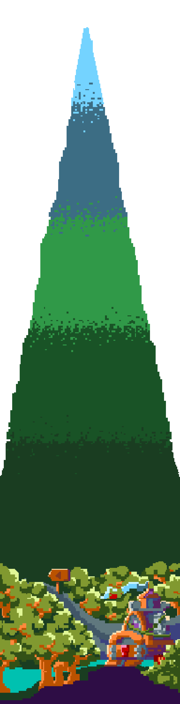
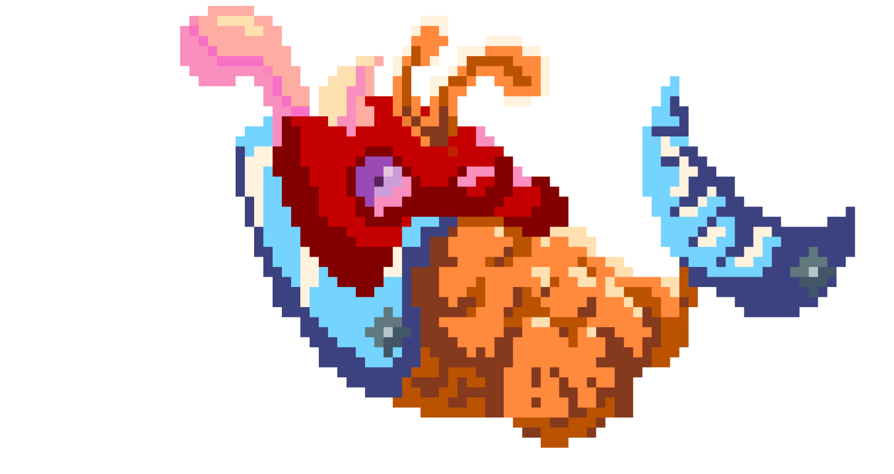

ALTITUDE
M
LEVEL

【 點擊高山怪獸以獲取資訊 】
【怪獸簡介】移動速度快 有劇毒但攻擊性不高危險指數：☆☆☆
【科普小知識】 蛇：山野活動時帶一枝棍子，一路打草而行。蛇多半在草叢中出沒，不太會主動攻擊。
蜜蜂：...山區活動時，可能會因拉動樹枝而觸動蜂巢，因此不要隨意亂搖樹枝。
【應急方式】穿著顏色較不鮮豔的長袖衣褲、包頭鞋、攜帶防蚊液、戴粗布手套、勿噴灑香水、盡量走大路，多帶薄外套、帽子，除了遮陽外，亦可幫助減少身體暴露區域，在意外發生時派上用場。
【怪獸簡介】看似溫和實則相當兇殘危險指數:☆☆☆☆☆
【科普小知識】 一旦溪水出現齊頭水（原本平靜的水面出現一波大面積、前方成一直線、等速前進的「齊頭水」）、水面混濁或水流加快，很可能便是溪水暴漲的前兆，一定要即刻離水。
【應急方式】遇溪水暴漲，被困岩石上或在沙洲中，應保持冷靜，等待救援，或尋找一些可助浮且耐沖擊的東西，萬一被水沖走時，可將物品置於身體下方，以免身體直接被撞傷。
【怪獸簡介】個性溫和攻擊性低 但破壞力高較難防禦危險指數:☆☆☆☆☆
【科普小知識】 熊：體重約60~150公斤，體長130~180公分，最大的特徵便是胸前的黃白色V字形或新月形斑紋。海拔300公尺至3,700公尺的山區皆有紀錄，主要分布於1,000至2,500公尺的中海拔林。...
野豬：廣泛分布在臺灣平地到海拔3000公尺以上高山，但偏好1000公尺以下較平緩的低海拔山區，僅有山區及周圍丘陵，才有牠們的蹤跡。
【應急方式】保持冷靜，安靜並以正常速度離開，切勿奔跑，盡量讓自處於下風處，以免氣味讓野獸注意到。
【怪獸簡介】長相不起眼容易讓人忽視偶有幾隻攻擊性特別高危險指數:☆☆☆☆
【科普小知識】 高山症是在高海拔地區，特別是登山或急劇升高的地區中，由於缺氧所引起的身體反應。這種情況通常發生在海拔2,400米（8,000英尺）以上的地區。... 高山症可大致分為三種： 急性高山症：頭暈、頭痛、噁心、嘔吐、失眠 高山肺水腫：乾咳、痰中帶血、休息時也喘氣 高山腦水腫：神智不清、答非所問、走路不穩
【應急方式】 1.立即下降高度:急性高山症100~200公尺、肺水腫及腦水腫下降1000公尺 2.供給氧氣和加壓帶：提供氧氣筒或攜帶型加壓帶（PAC）（加壓踩10分鐘就能讓海拔高度下降1500公尺）... 3.使用藥物應急：高山肺水腫可使用犀利士、威而鋼、鈣離子阻斷劑、乙型交感神經劑(常見氣喘用藥之一)/高山腦水腫則可使用類固醇、丹木斯(Diamox)，其中類固醇還有分口服、針劑、吸入等類型。
【怪獸簡介】攻擊力高 但數量稀少僅出現在特定區域危險指數:☆☆☆☆
【科普小知識】 身體溫度降低到一個危險水平，無法維持正常生理功能。在高山區域，寒冷的氣溫、風寒、濕冷的天氣、不足的保暖裝備和濕身等都是可能導致失溫的原因。... 第一級：病人意識清楚，並出現顫抖的症狀，身體功能輕微下降，體溫介於32～35度間。 第二級：病人開始意識模糊，顫抖停止，體溫介於28～32度之間 第三級：病人已失去意識，體溫介於24～28度之間 第四級：病人已休克昏迷，接近死亡，體溫約介於13.7～24度間 第五級：不可逆的死亡，體溫低於13.7度
【應急方式】 1.用黑色塑膠垃圾袋或毛毯包住身體，在裡面點蠟燭 2.將熱水瓶、暖暖包等放在頸、胸等中樞部位 3.升營火 4.多補充熱食、食物、喝溫熱水